画像にリンクがはってあるものは、クリックすると別窓で大きめサイズが表示されます。
| 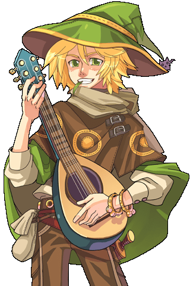 | 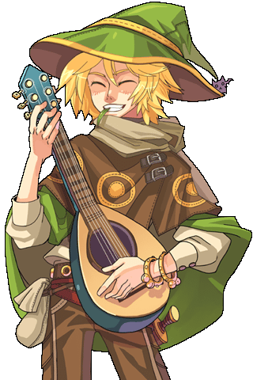 |
バングアプル・イレンド （吟遊詩人クエ・ゲフェン） | バングアプル・イレンド （吟遊詩人クエ・ゲフェン） |
バングアプル・イレンド （吟遊詩人クエ・ゲフェン） | バングアプル・イレンド （吟遊詩人クエ・ゲフェン） |
| 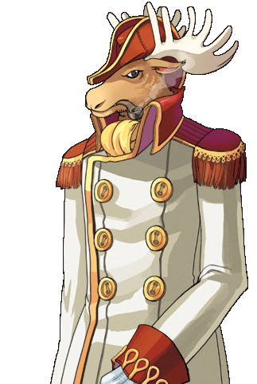 | |
トロック（弟） （飛行船クエ・シュバルツバルド国内線） | ペルロック（兄） （飛行船クエ・イズジュノ線） |

| |
オリバーヒルベルト （運命のカラスクエ・ジュノー図書館） | オリバーヒルベルト （運命のカラスクエ・ジュノー図書館） |
| 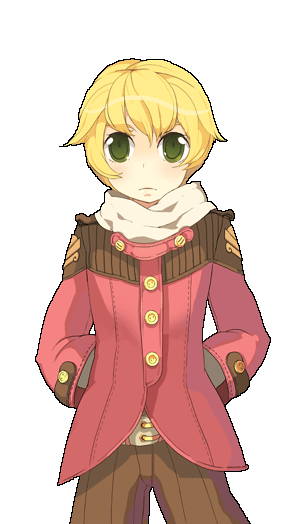 |

|
オリバーヒルベルト （運命のカラスクエ・ジュノー図書館） | オリバーヒルベルト （運命のカラスクエ・ジュノー図書館） |
| 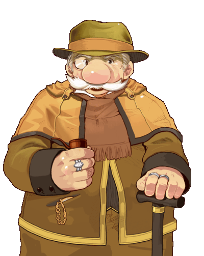 |
| mets_alpha.bmp メッツブライド （The Signクエ・プロンテラ） |
| 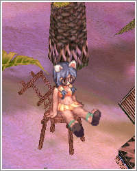 | 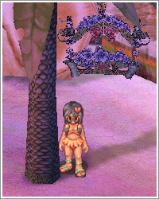 |
| 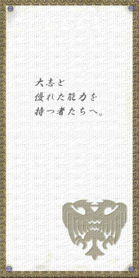 | 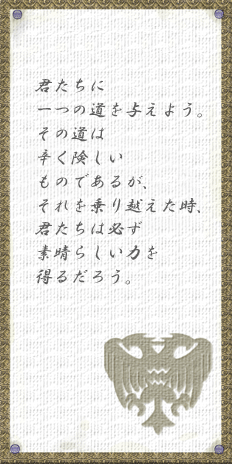 |
| 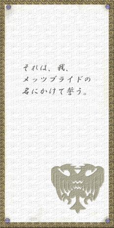 | 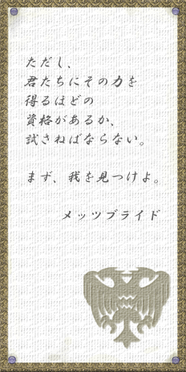 |
back
(c) Gravity Co., Ltd. & Lee MyoungJin(studio DTDS). All rights reserved.
(c) GungHo Online Entertainment, Inc. All Rights Reserved.
当コンテンツの再利用（再転載・配布など）は、禁止しています。